Most current LLM-based models for video understanding can process videos within minutes. However, they struggle with lengthy videos due to challenges such as “noise and redundancy", as well as “mem- ory and computation" constraints. In this paper, we present Goldfish, a methodology tailored for comprehending videos of arbitrary lengths. We also introduce the TVQA-long benchmark, specifically designed to evaluate models' capabilities in understanding long videos with questions in both vision and text content. Goldfish approaches these challenges with an efficient retrieval mechanism that initially gathers the top-k video clips relevant to the instruction before proceeding to provide the desired response. This design of the retrieval mechanism enables the Goldfish to efficiently process arbitrarily long video sequences, facilitating its application in contexts such as movies or television series. To facili- tate the retrieval process, we developed MiniGPT4-Video that generates detailed descriptions for the video clips. In addressing the scarcity of benchmarks for long video evaluation, we adapted the TVQA short video benchmark for extended content analysis by aggregating questions from entire episodes, thereby shifting the evaluation from partial to full episode comprehension. We attained a 41.78% accuracy rate on the TVQA-long benchmark, surpassing previous methods by 14.94%. Our MiniGPT4- Video also shows exceptional performance in short video comprehension, exceeding existing state-of-the-art methods by 3.23%, 2.03%, 16.5% and 23.59% on the MSVD, MSRVTT, TGIF,and TVQA short video bench- marks, respectively. These results indicate that our models have significant improvements in both long and short-video understanding.

Goldfish framework,First break down the long video into clips, then encode them in Video Descriptor according to their timing and corresponding subtitles, then encode the use query and retrieve the most related clips in the retrieval module, and finally send the top-K clips information to the answer module to get the final answer.

MiniGPT4-video architecture: For each frame, we use EVA-CLIP to get the visual tokens and concatenate each adjacent visual token into a singular token then convert these tokens to the language model space using a linear layer and get the language token from LLM tokenizer. Concatenate both the visual and subtitle text tokens together and do this for all the sampled frames and appending the instruction tokens at the end of the input sequence.
We evaluate the efficacy of our proposed frame- work, Goldfish:, across several well-established benchmarks, specifically the LLama-Vid, MovieChat, Movie QA, and TVQA-Long datasets. To thoroughly examine our framework's capabilities, we analyze input modalities in two configurations: vision-only (V) and vision combined with input subtitles (V+T). Our findings, detailed in Table 3, indicate that our framework surpasses all existing long video baselines in the vision modality.We establish state-of-the-art (SOTA) performance on these challenging benchmarks. This achievement holds true even under an unfair comparison against LLama-Vid [20], which benefits from using the MovieNet dataset while training and these movies are in both LLama-Vid benchmark and Movie QA. Despite this advantage, our results significantly outperform the competition. Incorporating both video frames and aligned subtitles into our model leads to an average performance boost of 8% across the benchmarks. As highlighted in Table 3, this enhanced approach enables us to outperform LLama-Vid on the TVQA benchmark, providing a fair comparison since LLama-Vid utilizes the other benchmarks during its training phase.:

On short-video understanding, we continue to secure state-of-the-art (SOTA) results, outperforming contemporaneous works, including LLama-Vid. To validate our framework's proficiency in short-video analysis, we conducted evaluations against current SOTA methodologies across an extensive suite of five benchmarks: Video ChatGPT, MSVD, MSRVTT, TGIF, and TVQA. These benchmarks collectively offer a comprehensive platform for assessing short-video comprehension capabilities, with five focusing on open-ended questions and TVQA featuring multiple-choice questions. Our results, presented in Tables 4 and 5, demonstrate our framework's superi- ority over competing methods by a significant margin, affirming our considerable advancements across a varied and demanding collection of benchmarks. To thor- oughly evaluate our approach, we devised two variations of our framework: one analyzing purely visual elements and another incorporating subtitles. The per- formance enhancements achieved with these models are noteworthy, registering gains of 3.23%, 2.03%, 16.5% and 23.59% on the MSVD, MSRVTT, TGIF, and TVQA benchmarks respectively. This underscores our framework's ability to achieve SOTA results across the board, markedly elevating performance in the domain of short-video understanding.


 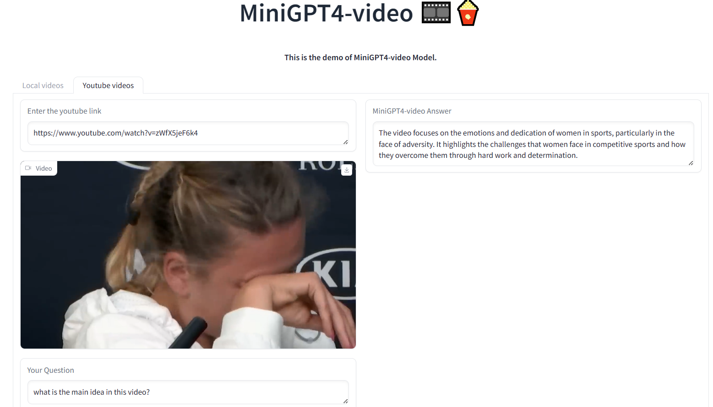
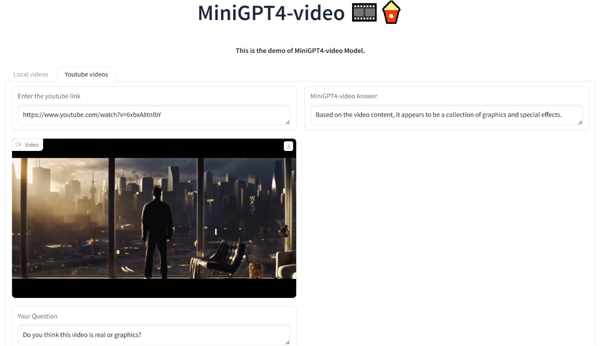
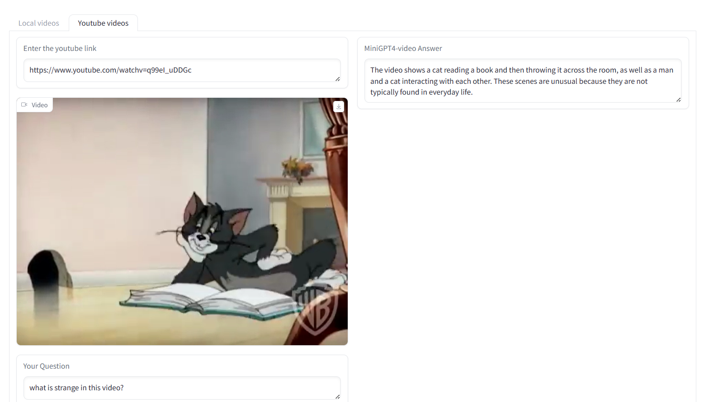
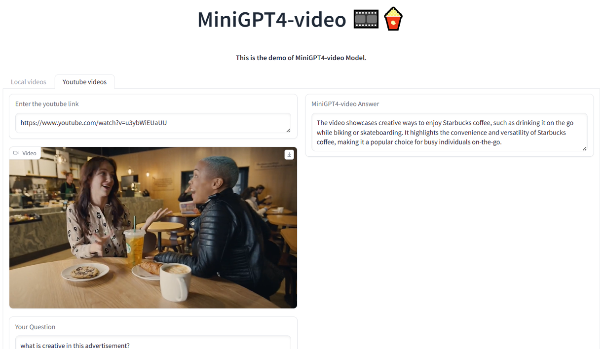
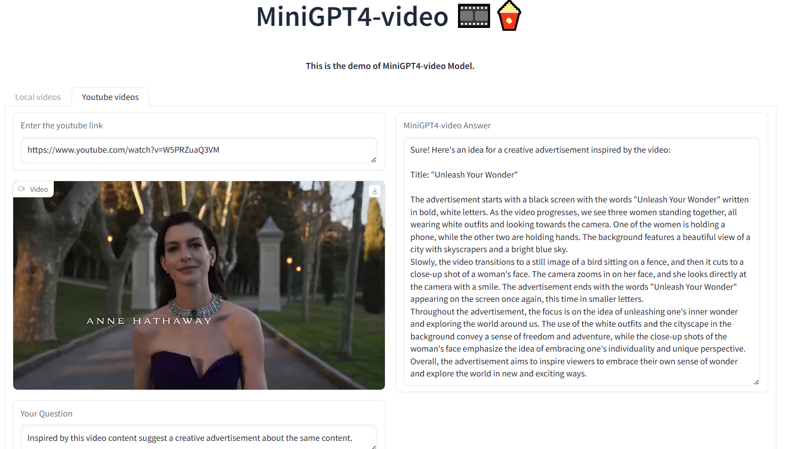
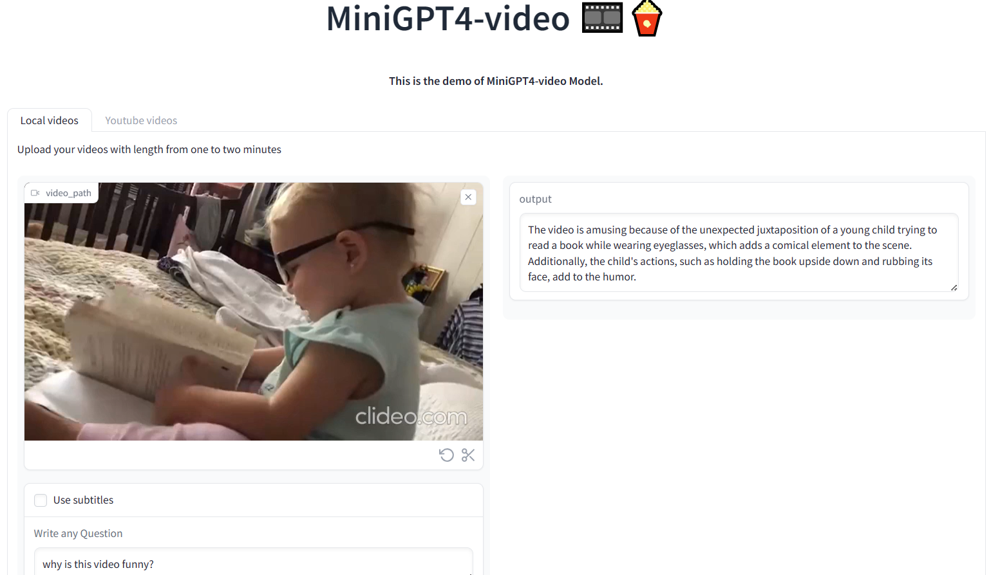
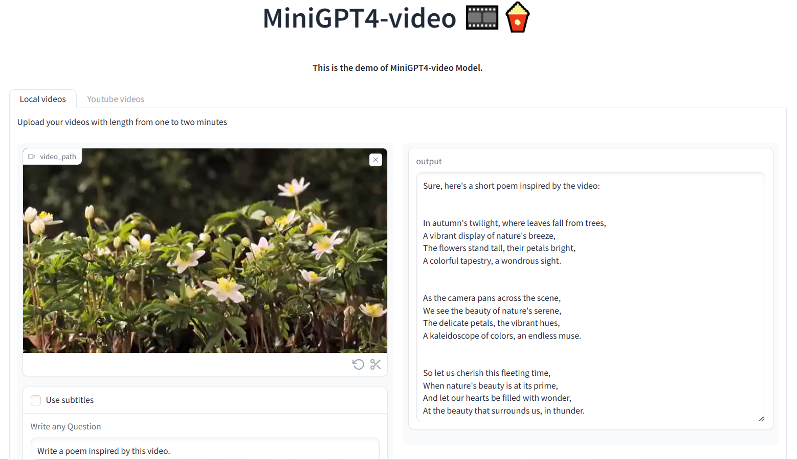
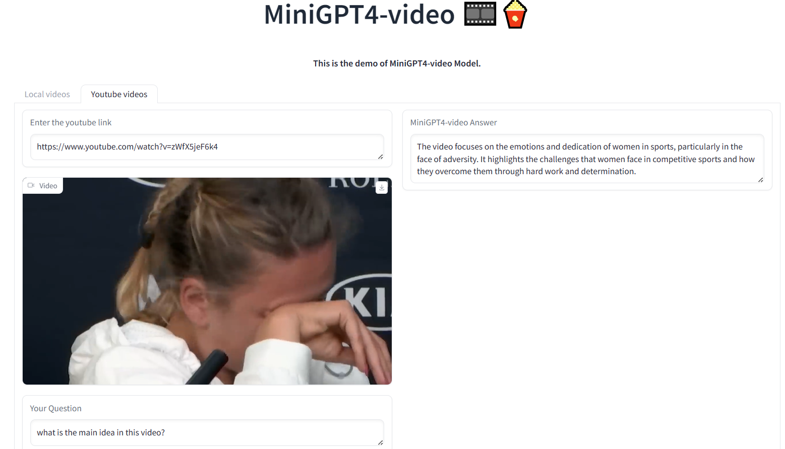
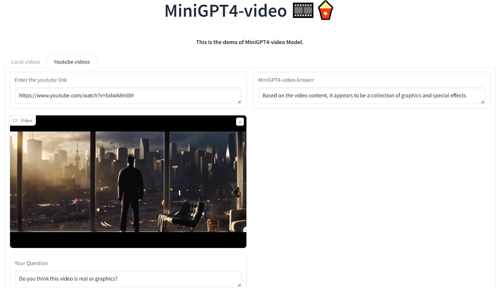
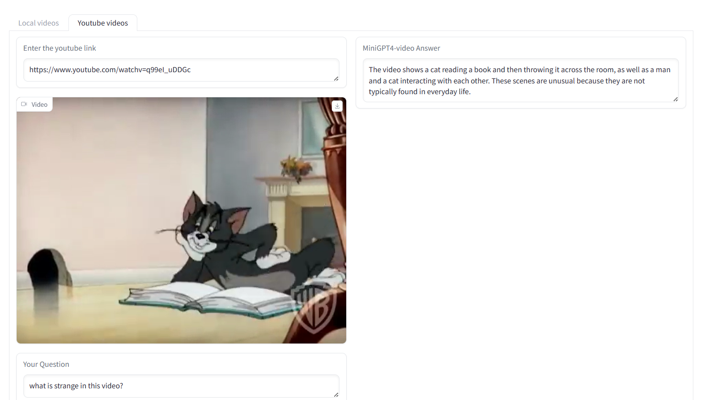
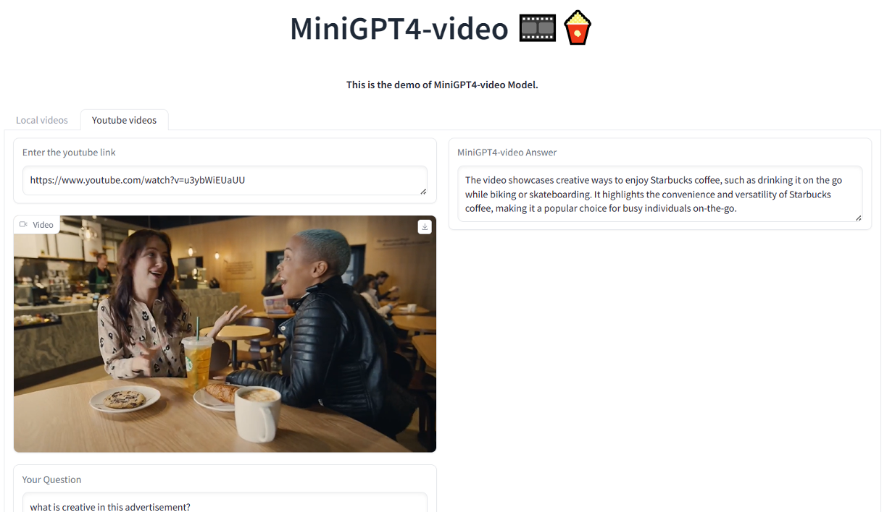
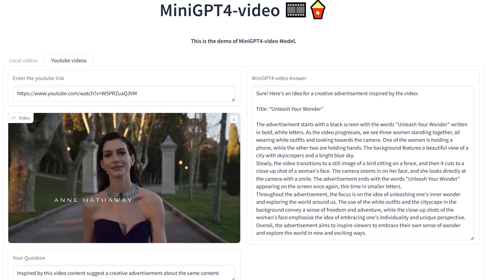
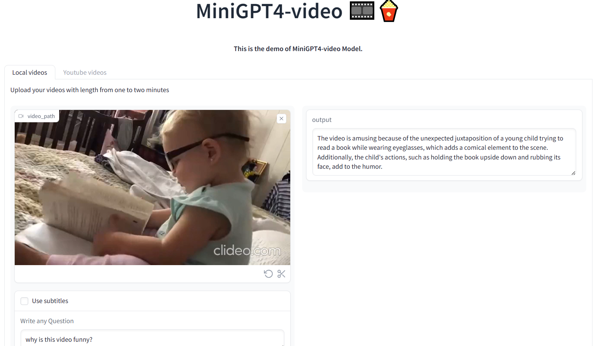
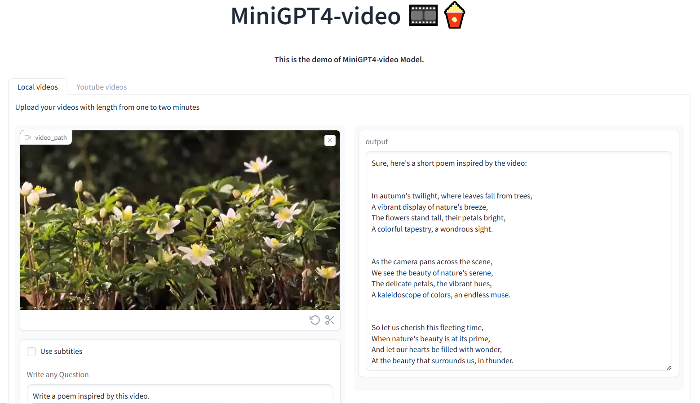
@misc{ataallah2024goldfishvisionlanguageunderstandingarbitrarily,
title={Goldfish: Vision-Language Understanding of Arbitrarily Long Videos},
author={Kirolos Ataallah and Xiaoqian Shen and Eslam Abdelrahman and Essam Sleiman and Mingchen Zhuge and Jian Ding and Deyao Zhu and Jürgen Schmidhuber and Mohamed Elhoseiny},
year={2024},
eprint={2407.12679},
archivePrefix={arXiv},
primaryClass={cs.CV},
url={https://arxiv.org/abs/2407.12679},
}
@misc{ataallah2024minigpt4videoadvancingmultimodalllms,
title={MiniGPT4-Video: Advancing Multimodal LLMs for Video Understanding with Interleaved Visual-Textual Tokens},
author={Kirolos Ataallah and Xiaoqian Shen and Eslam Abdelrahman and Essam Sleiman and Deyao Zhu and Jian Ding and Mohamed Elhoseiny},
year={2024},
eprint={2404.03413},
archivePrefix={arXiv},
primaryClass={cs.CV},
url={https://arxiv.org/abs/2404.03413},
}
This website is adapted from Nerfies, licensed under a Creative Commons Attribution-ShareAlike 4.0 International License.